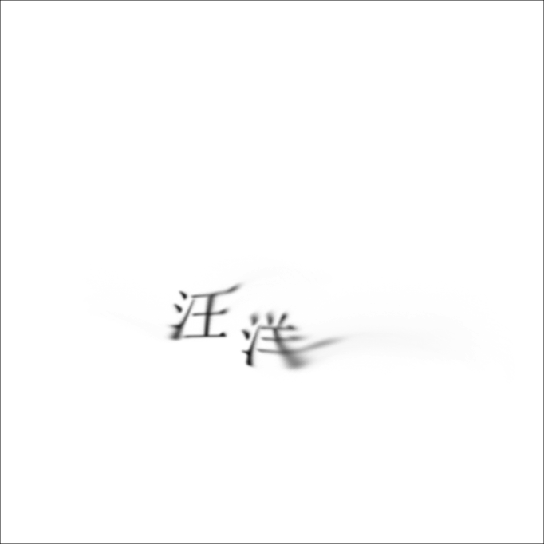
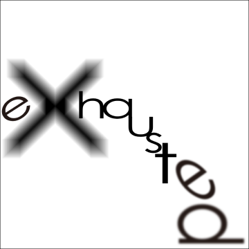
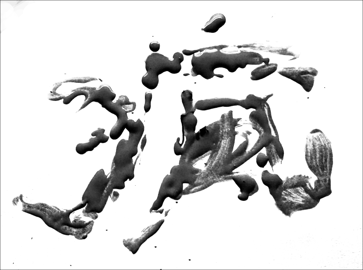

根據詞彙旨意，轉化為對應視覺意境。

字體設計-藝術型
字體設計往往牽動人對詞彙與其意境之視覺印象與概念，又可被分為傳達型與藝術型兩種型態 傳達型多用於正式文件及訊息等需清晰傳達之狀況；而 藝術型則多用於創作、廣告宣傳、任何需要表達請感連結之情況。 而在海報、招牌等設計物使用中，多以藝術型做為表現。 以下，我根據幾個詞彙透過實驗性的方式除了在電腦內、也透過實際物件製作字體並拍攝，來創作 其字體之視覺意象。


images/typography/coffee.png


images/typography/dream.png